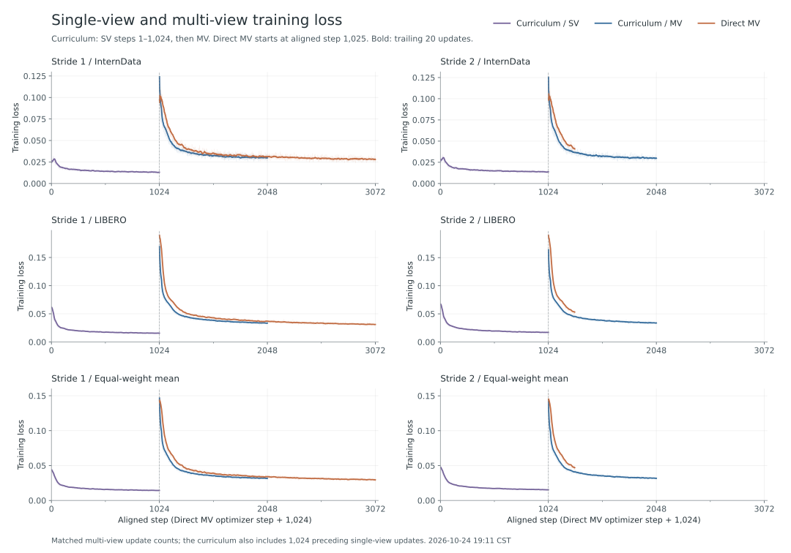

BATCHES 2026-10-23 / 2026-10-24
Training loss.

Controls
InternData + LIBERO. R00 / D_ALL, no ray loss, common warmstart and frozen layers, peak learning rate 4e-5, equal dataset loss weights. Multiview batch sizes 14 / 16. Direct-MV steps are shifted by 1,024 to align the multiview stages; this is not an equal-total-training-budget axis.